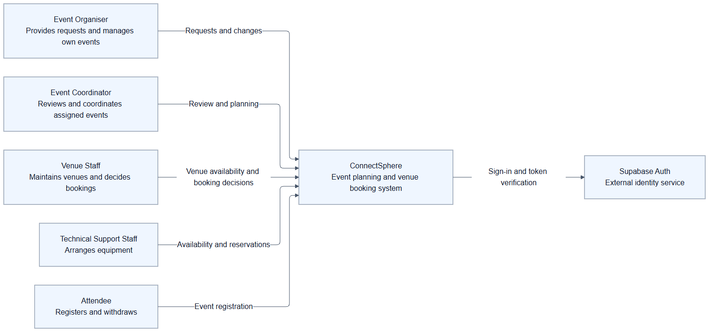
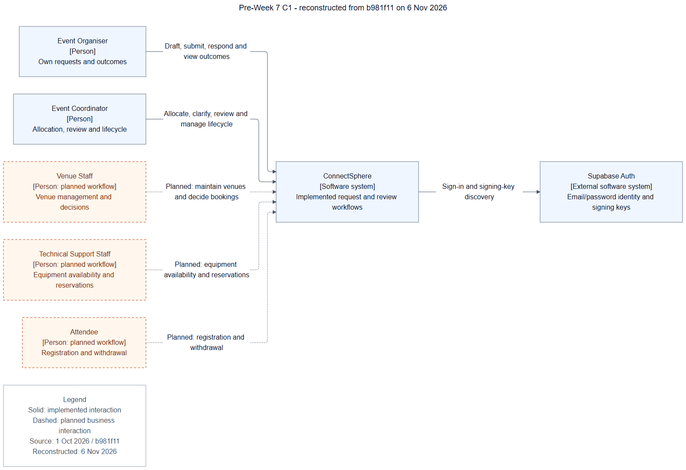

Two genuine original C1/C2 diagrams, followed by three separately labelled reconstructions. An original C3 is Not recorded. Venue, equipment and attendee workflows were planned: their roles/schema existed, but business APIs and pages were absent.
Original C1 - pre-Week 7 intended release
Unchanged October Mermaid; rendered 6 November. Intended-release scope includes planned features.
Open full-size SVG · PNG · Mermaid

Pre-Week 7 C1 - reconstructed from b981f11 on 6 Nov 2026
New reconstruction prepared 6 November from the 1 October code; not an original October artifact.
Open full-size SVG · PNG · Mermaid
